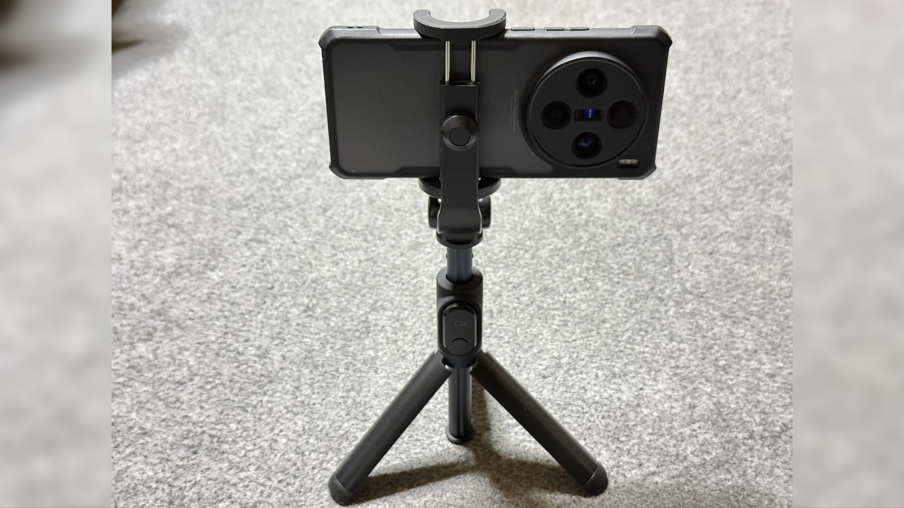
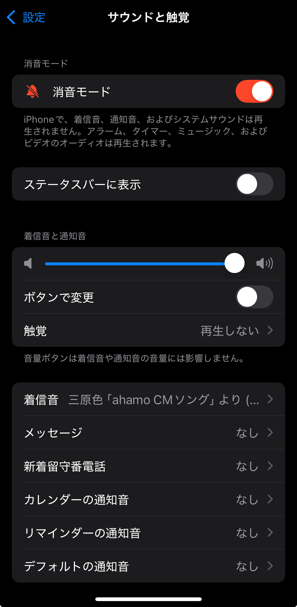

iPhone・Androidのシャッター音を消す方法

国内発売のスマホは原則シャッター音強制
日本と韓国で発売されたスマホは大半の機種でシャッター音が強制的に鳴る。 これはAndroidスマホだけでなくiPhoneでも同様で、マナーモードで無音になったり設定から無音化できる海外発売のスマホと違い、ほとんどの機種で音量設定に関係なく強制的にシャッター音が鳴ってしまう。 そのために海外版を買おうとしてもFeliCa非搭載や技適未取得など、日本向けに最適化されていないことでのデメリットも発生する。 さらに海外版は日本で保証を受けられないことがほとんどである。 サードパーティ製のアプリを使うという手段もあるが、それらのアプリはその機種に最適化されたものではなく、品質が悪かったり一部機能が使えなかったりする。 しかし、一部機種では設定を変更したり条件付きでシャッター音の無音化が可能である。 ここからは対象機種とその方法について解説する。
対象機種
iPhone
実はiPhoneでも海外版であればシャッター音は無音化できる。 海外版では先程述べたデメリットがあるのではと思う人もいるだろうが、iPhoneに関しては例外である。 まず、iPhoneは全世界のモデルでFeliCaが搭載され、カナダ版、グアム版、メキシコ版、サウジアラビア版などには技適もつく。 さらにAppleはiPhoneをアクティベートした日から1年間は世界中のApple StoreまたはApple正規サービスプロバイダで保証が受けられる。 このように、iPhoneは海外版が機能や仕様の面で国内版より劣っている部分が存在しない。
方法
1.消音モードまたはメディアの音量を0にする
消音モードまたはメディアの音量が0のときはシャッター音が消える。

デメリット
･対応機種は海外版のみ
iPhoneの国内版でシャッター音を消す方法は存在しないと言っても過言ではない。
Google Pixel
Pixelの標準カメラアプリでのシャッター音無音化はroot化しない限り不可能である。 カメラ無音化Plusを使うという方法もあるが、カメラアプリ起動直後は無音化されなかったり、カメラアプリの起動が検知されなかったりと動作が不安定である。 そこで、標準カメラアプリのModであるGCamを使うという方法がある。 Pixelのカメラアプリは非常に優秀で、ハードウェアが弱くてもソフトウェアの力できれいな写真が撮れる。 このため海外の開発者たちがそのアプリを他のスマホでも使えるように移植したアプリがGCamとなる。 以下のリンクではこのGCamを標準カメラアプリの代わりに使用してシャッター音を消す方法を解説する。
Galaxy
Galaxyではかつて "SetEdit" というアプリを使ってシステム設定を変更することでシャッター音を消せたが、Android 14で塞がれてしまった。 しかし、SetEditで適用していた変更をadbコマンドで実行するとシャッター音が消せるようになる。 adbコマンドはPCで実行する方法とスマホで実行する方法の2通りあるが、以下のリンクではPCを用いた方法を解説する。 この方法はSIMフリー版とキャリア版関係なく全モデルで使える。
Xiaomi･Redmi･POCO
XiaomiとRedmi、POCOはSIMフリー版では地域設定を変更することで、Dimensity搭載モデルではMediaTek Engineer Modeで設定を変更することでそれぞれシャッター音が消せる。 以下のリンクではそれぞれの方法を解説する。
Motorola
MotorolaはSIMフリー版に限り本来シャッター音が消せるが、日本のSIMを追加するとシャッター音が消せなくなる。 しかし、日本のSIMを利用している状態でも海外のSIMを追加することで再びシャッター音が消せるようになる。 以下のリンクではeSIM対応モデルとeSIM非対応モデルに分けてそれぞれ方法を解説する。 MotorolaのSIMフリー版はeSIM対応モデルはnanoSIMが2枚利用できず、eSIM非対応モデルはnanoSIMが2枚利用できるようになっている。
Nothing Phone･CMF Phone
Nothing PhoneとCMF Phoneは本来シャッター音が消せるが、日本のSIMを追加するとシャッター音が消せなくなる。 しかし、日本のSIMを利用している状態でも海外のSIMを追加することで再びシャッター音が消せるようになる。 以下のリンクではeSIM対応モデルとeSIM非対応モデルに分けてそれぞれ方法を解説する。 Nothing PhoneとCMF Phoneは全モデルでnanoSIMが2枚利用でき、さらに2025年以降発売のモデルはeSIMが利用できる。 また、この方法はSIMフリー版とキャリア版関係なく全モデルで使える。
nubia･REDMAGIC
nubia Zシリーズ、REDMAGICに限り、カメラアプリの設定を変更するまたは音量を変更することでシャッター音を消せる。 以下のリンクではそれぞれの方法を解説する。
シャッター音は何のために存在するのか
日本にはシャッター音は鳴らさなければならないという法律はない。 それにも関わらず、なぜ多くのメーカーが日本で販売する端末でシャッター音を強制するのか。 主な理由として、携帯キャリアによる自主規制がある。 カメラ付きの携帯電話が発売され始めてから、盗撮防止という目的で携帯キャリアによるシャッター音の強制が行われてきた。 これに準じてSIMフリー版でもシャッター音を強制しているメーカーが多い。 しかし、シャッター音を鳴らしたところで盗撮の防止になるとは考えにくい。 また、先述の通り日本と韓国以外ではシャッター音の強制は行われていない。 よって、この自主規制は無用の長物である。 最近はXperiaやAQUOSもSIMフリー版でシャッター音を消せるようになった。 今後このような流れが日本のスマホ業界で広がっていくことを期待したい。
プロフィール

高度情報社会の最先端を駆け抜ける